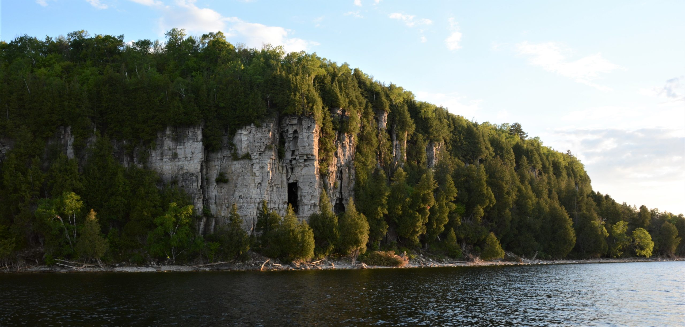
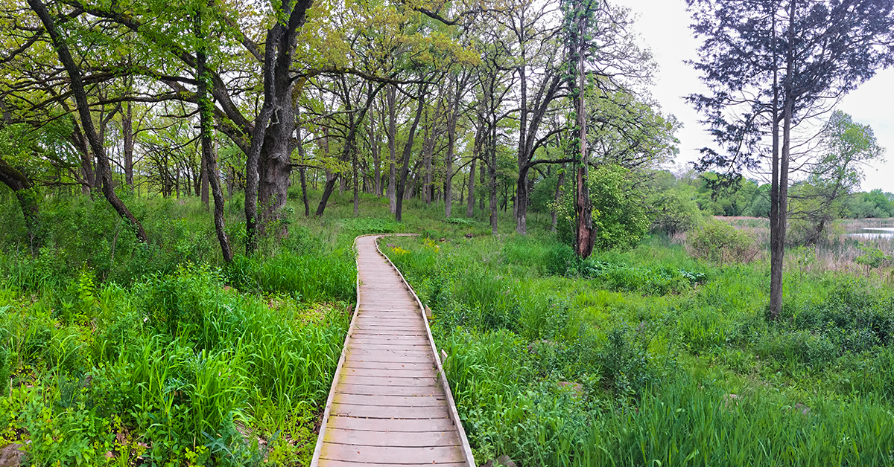
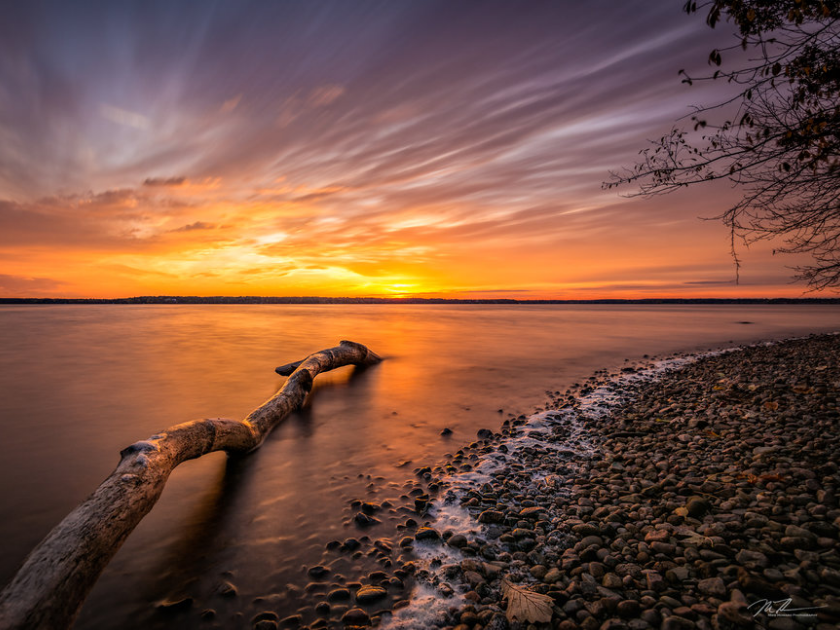

The Wisconsin Department of Natural Resources (WDNR) is a government agency of the U.S. state of Wisconsin charged with conserving and managing Wisconsin's natural resources. The Wisconsin Natural Resources Board has the authority to set policy for the WDNR. The WDNR is led by the Secretary, who is appointed by the Governor of Wisconsin. The WDNR develops regulations and guidance in accordance with laws passed by the Wisconsin Legislature. It administers wildlife, fish, forests, endangered resources, air, water, waste, and other issues related to natural resources. The central office of the WDNR is located in downtown Madison, near the state capitol.
Peninsula State park
Peninsula State Park is a 3,776-acre Wisconsin state park with eight miles of Green Bay shoreline in Door County. Peninsula is the third largest state park in Wisconsin and is visited by an estimated one million visitors annually. Considered Wisconsin's most complete park, Peninsula has 468 campsites, three group camps, a summer theater, an 18-hole golf course, sand beach, biking, hiking and ski trails, 150-foot bluffs, a lighthouse and eight miles of Door County shoreline. The park is open year-round but some features may not be accessible outside the peak season.
Lapham Peak State Park
The park includes three picnic areas, birdwatching, a butterfly garden, a prairie restoration area, an amphitheater, and over 25 miles (40 km) of dirt and accessible paved nature trails. A backpacking campsite located beside a four-mile (6 km) segment of the Ice Age Trail is also in the park. There is a 5-mile (8.0 km) multi-use trail for horse riding, mountain biking, snowshoeing and dog sled training. Over 20 miles (32 km) of trails are open in the winter for cross-country skiing. The SummerStage is an outdoor stage in a natural amphitheater that hosts shows including plays, musicals, and dance as well as summer theater camps.
Lake Wissota State Park
Lake Wissota State Park is a 1,062-acre Wisconsin state park near the town of Chippewa Falls. The park is situated on the northeast shore of Lake Wissota, a reservoir on the Chippewa River. Camping, boating, and fishing are the most popular activities.Park lands are covered in a mix of pine/hardwood forests and prairie. Visitors can access the Old Abe State Trail and bike or hike 17.5 miles (28.2 km) to Brunet Island State Park.
